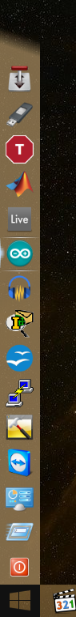

Here is what I've got so far

I could only get this close to the taskbar color, with lots of trial and error. But I still believe that with a specific background color (and transparency on the alpha chanel), combined with the proper glass color blending amount, and opacity mode it is possible to achieve the exact same look and color of the taskbar. The only clue i've found is in Classic Shell's settings, where one can disable the taskbar transparency.
Maybe these values are what Windows uses on the taskbar by default?
If somebody has any advice please let me know.
Notice the start button, which is from forum user "GauravK" (thanks a lot), on which the logo blends in to the exact taskbar colour. So I guess then it is possible what I'm after.
I've also replicated the looks of the selection in the taskbar (and the little white arrow too but since there is no accessible sub menus in my menu it is now visible) to the start menu from scratch, which with I'm quite satisfacted considering I'm not into graphics design at all. But I think maybe these images (and masks) what the taskbar uses could be found somewhere in the system, which would come really handy for me to get the EXACT same look. Any advice regarding this is also welcome.
And of course if somebody would like a copy of my StartBar skin, let me know